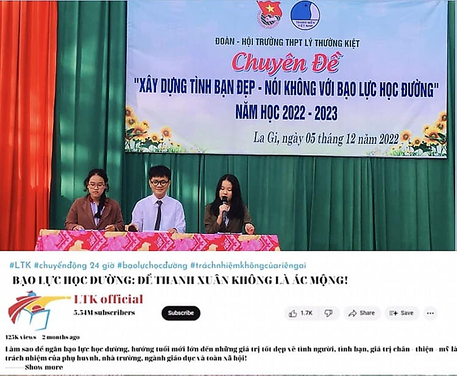
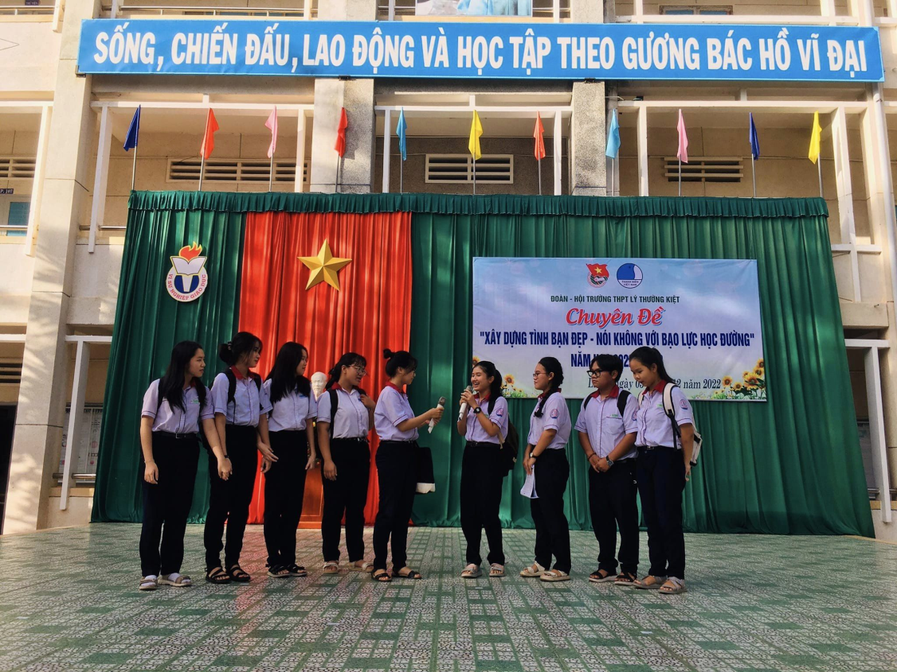
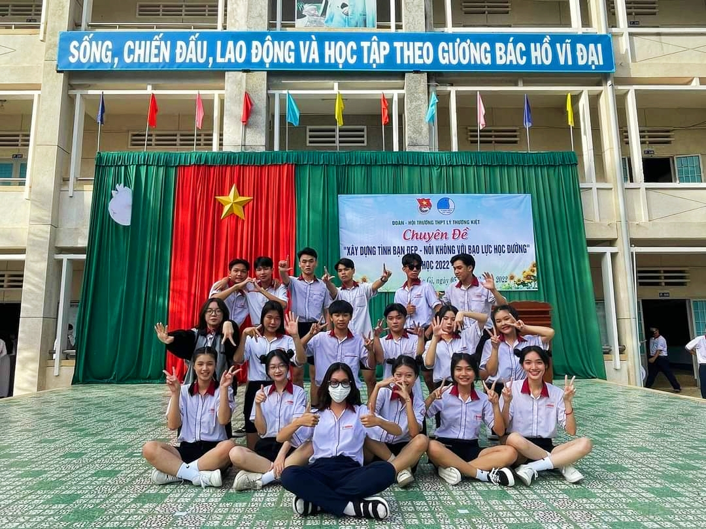

Tuổi học trò luôn là khoảng thời gian tươi đẹp nhất trong cuộc đời của mỗi chúng ta.
Thế nhưng, có một vấn nạn đang xảy ra và ngày càng gây ra những ảnh hưởng tiêu cực
trong cộng đồng hiện nay chính là nạn bạo lực học đường. Đây là một vấn đề vô cùng nhức nhối,
đã và đang trở nên đáng lo ngại bởi lẽ nó gây ảnh hưởng xấu và có sự tác động sâu sắc đối với
thế hệ trẻ, vì vậy cần phải có biện pháp để khắc phục, trả lại môi trường học đường trong sáng,
lành mạnh cho học sinh.
Và trong những năm gần đây, vấn nạn này lại càng trở nên phổ biến hơn, mức độ nghiêm trọng cũng cao hơn.
Tại ngôi trường mà chúng ta đang theo học, bạo lực học đường không quá phổ biến nhưng cũng không phải là không tồn tại.
Chính vì vậy, nhằm giúp các em học sinh hiểu rõ hơn về vấn đề này, Sáng ngày 5/12/2022, trường THPT Lý Thường Kiệt đã tổ
chức buổi sinh hoạt chuyên đề “Xây dựng tình bạn đẹp - Nói không với bạo lực học đường”.
Ngày 05/12/2022, Đoàn - Hội trường THPT Lý Thường Kiệt tổ chức Chuyên đề “ Xây dựng tình bạn đẹp, nói không với bạo lực học đường".
Chuyên đề với tiểu phẩm ý nghĩa cùng tiết mục văn nghệ vui nhộn được diễn ra thành công tốt đẹp. Qua đó, các bạn Đoàn viên,
thanh niên và học sinh nhận thức rõ hơn về giá trị của tình bạn, xác định rõ trách nhiệm của bản thân trong quan hệ bạn bè.
Đồng thời chương trình cũng giúp chúng ta trau dồi kỹ năng xử lý tình huống, xây dựng tình bạn đẹp, ngăn chặn và đấu tranh
với các hành vi bạo lực học đường.

CÁC HOẠT ĐỘNG
Mở đầu buổi chuyên đề là tiểu phẩm ngắn do các em học sinh trường THPT Lý Thường Kiệt thực hiện. Thông qua tiểu phẩm giúp chúng
ta có cái nhìn trực quan hơn về vấn nạn bạo lực học đường hiện nay, ngoài ra còn giúp các em học sinh trau dồi kỹ năng xử lý
tình huống để ngăn chặn bạo lực học đường hoặc tham gia giải quyết, đấu tranh với các hành vi bạo lực học đường.

Sau tiểu phẩm “ Nói không với bạo lực học đường”, toàn thể học sinh cùng quý thầy cô trường THPT Lý Thường Kiệt đã hết
sức hào hứng với tiết mục nhảy mashup “ Tình bạn diệu kì” vô cùng dễ thương đến từ tập thể lớp 12A5.
Tiết mục có phần nhí nhảnh, vui tươi, thêm cả “ngầu lòi” tạo không khí sôi động cho buổi sang đầu tuần
“ Ta đã ở bên nhau
Những năm tháng nhọc nhằn
You make me feel like
I got everything...”

Những bài hát chủ đề tình bạn, tình yêu tuổi học trò khiến buổi chuyên đề trở nên gần gũi, tạo hứng thú và đặc biệt
là truyền tải trọn vẹn thông điệp “ Tình bạn đẹp”, giúp các em nhận thức rõ hơn về giá trị của tình bạn và xác định
rõ trách nhiệm của bản thân trong mối quan hệ bạn bè.
PHỎNG VẤN
Qua buổi chuyên đề đầy ý nghĩa nhân văn và thú vị, bạn Tường Hy lớp 11B1 - một thành viên trong tiểu phẩm “bạo lực học
đường”, đã có những chia sẻ vô cùng dễ thương về buổi chuyên đề hôm ấy. “Đây là một buổi chuyên đề rất là bổ ích và
rất tốt đối với những bạn học sinh chúng ta,giúp ta biết được cách ứng xử trong những tình huống bạo lực học đường,
mình hi vọng nhà trường sẽ có những buổi chuyên đề bổ ích như thế này nữa”- Hy chia sẻ.
Thông qua việc sân khấu hóa để triển khai nội dung “bạo lực học đường” và “tình bạn đẹp”, nhấn mạnh tuyên truyền pháp
luật với Bạo lực học đường, hy vọng các em học sinh nhận thức rõ hơn về giá trị của tình bạn và hậu quả nghiêm trọng của
“ bạo lực học đường”. Bởi lẽ, việc xây dựng tình bạn đẹp, tình yêu đẹp và nói không với bạo lực học đường sẽ là một nền
tảng tốt để mỗi ta góp phần xây dựng một xã hội không có bạo lực, xã hội mà mọi người ở đó đối xử với nhau bằng tình yêu
thương và sự chân thành. Hãy để Thanh xuân của chúng ta luôn đầy ắp những tiếng cười, những kỉ niệm vui vẻ chứ không phải
là cơn ác mộng!